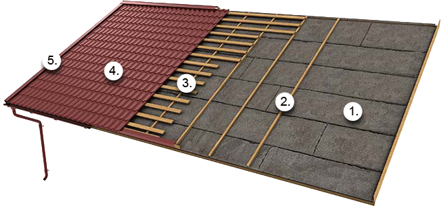
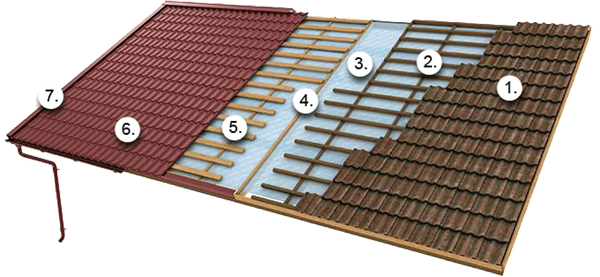
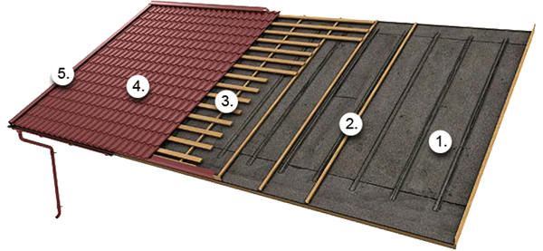
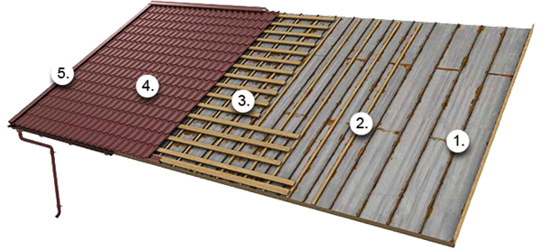
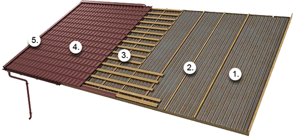
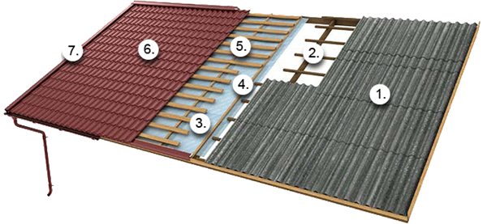

Trimiteţi o întrebare doctorului de acoperiş
Beneficiaţi de asistenţă la întrebările dumneavoastră şi provocările referitoare la acoperişuri prin alegerea unei categorii din cele de mai jos.
- Alegerea produsului potrivit
-
Ce culoare să aleg pentru acoperişul meu?
Răspunsul Doctorului de acoperişuriPostat: 16 martie 2012 13:56:37
Poate cea mai plăcută etapă în achiziţia unui acoperiş este alegerea culorilor. Ruukki vă propune o gamă amplă de profile de acoperiş din oţel, iar dumneavoastră puteţi găsi pe acest website toate nuanţele potrivite profilului pentru care optaţi. Discutaţi despre culoarea selectată cu unul dintre dealerii noştri, care vă va oferi mai multe informaţii. -
Ce anume ar trebui să iau în calcul la planificarea proiectului pentru acoperişul meu?
Răspunsul Doctorului de acoperişuriPostat: 5 martie 2012 17:41:21
Un proiect pentru acoperiş este o iniţiativă importantă. Acesta trebuie planificat cu mult timp înainte, ţinând cont de toate informaţiile disponibile. Dacă vă hotărâţi să finalizaţi întregul proiect cu ajutorul companiei Ruukki, ar trebui să începeţi prin a ne trimite schiţa sau o fotografie a casei dumneavoastră, astfel încât să putem estima amploarea proiectului. De asemenea, puteţi face chiar dumneavoastră estimările sau puteţi apela la ajutorul celui mai apropiat dealer local. Vă recomandăm să consultaţi şi gama noastră largă de culori şi profile, în funcţie de care puteţi să alegeţi acoperişul care corespunde cel mai bine nevoilor dumneavoastră. Pe baza măsurătorilor corecte şi a opţiunilor exprimate de dumneavoastră cu privire la culoare şi profilele de acoperiş, vă vom oferi o estimare a costurilor. După ce aceasta va fi aprobată, sarcina dumneavoastră s-a încheiat. De toate celelalte acţiuni ne vom ocupa noi. La cumpărarea unui acoperiş din oţel de la Ruukki, pachetul include în mod automat tot ceea ce este necesar pentru instalarea acoperişului dumneavoastră, astfel încât nu trebuie să vă mai faceţi griji. -
Care sunt costurile renovării unui acoperiş?
Răspunsul Doctorului de acoperişuriPostat: 5 martie 2012 17:40:32
Înainte de a vă trimite oferta finală, un specialist al companiei noastre vizitează locaţia pentru a face o serie de măsurători în cel mai profesionist mod şi pentru a constata dacă structura pe care se va monta acoperişul este realizată corect. Astfel, se va evita apariţia unor costuri neprevăzute în timpul executării proiectului dumneavoastră. Costurile unui acoperiş nou pot varia în funcţie de tipul profilului ales, stratul de acoperire selectat pentru acoperiş, de echipa de montatori care efectuează lucrarea, precum şi de complexitatea şi locaţia proiectului. Pentru a afla mai multe informaţii despre factorii care pot influenţa costurile unui nou acoperiş, consultaţi secţiunea noastră Cum să obţii cel mai bun acoperiş. Luaţi în considerare faptul că atunci când specialiştii Ruukki vă prezintă o ofertă privind costurile proiectului pentru acoperişul dumneavoastră, vă puteţi baza pe preţul stabilit. -
Ce sunt produsele de siguranţă pentru acoperiş?
Răspunsul Doctorului de acoperişuriPostat: 5 martie 2012 17:39:52
Produsele de siguranţă pentru acoperiş au rolul de a vă proteja atât pe dumneavoastră, acoperişul dumneavoastră, dar şi pe cei din jur. Pentru accesul dumneavoastră pe acoperiş lipsit de primejdii, de exemplu atunci când efectuaţi lucrări de întreţinere, cât şi pentru siguranţa altor persoane, care staţionează sub acoperiş sau se află în trecere, vă recomandăm să optaţi pentru montarea de produse de siguranţă adecvate şi funcţionale. Ruukki oferă o gamă variată de produse de siguranţă pentru acoperiş, ce include sisteme antizăpadă, scări şi podeţuri de acoperiş. Cerinţele legale privind produsele de siguranţă pentru acoperiş depind de ţara în care locuiţi. Contactaţi cel mai apropiat dealer local pentru a solicita informaţii cu privire la cerinţele legale. -
Care sunt straturile de acoperire pentru acoperişurile metalice recomandate în regiunile cu temperaturi scăzute?
Răspunsul Doctorului de acoperişuriPostat: 5 martie 2012 17:37:51
Pural este un strat de acoperire pe bază de poliuretan care are cele mai bune performanţe atunci când este aplicat pe acoperişuri şi pe foile metalice pentru faţadă. De asemenea, este uşor de folosit în cadrul procesului de producţie şi de instalare a profilelor metalice. Acest strat de acoperire face ca suprafeţele uşor structurate să fie rezistente la coroziunea ce poate apărea ca urmare a acţiunii zăpezii şi a gheţii, precum şi a radiaţiilor cu ultraviolete. Calităţile stratului de acoperire Pural sunt reprezentate de rezistenţa sa la acţiunea unor factori chimici, precum şi uşurinţa cu care poate fi revopsit. Produsele care au în componenţă acest strat de acoperire au o de garanţie de 15 ani. Citiţi mai multe despre garanţii şi straturile de acoperire
- Recomandări pentru instalare
-
Care este cea mai bună perioadă din an pentru a demara proiectul pentru acoperiş?
Răspunsul Doctorului de acoperişuriPostat: 5 martie 2012 17:40:48
Montarea acoperişurilor se realizează de cele mai multe ori pe timpul verii, ceea ce o transformă în cea mai aglomerată perioadă a anului pentru aceste tipuri de lucrări. Din acest motiv, ar fi bine să luaţi în considerare şi posibilitatea ca programul dumneavoastră să nu corespundă cu cel al montatorului. Cu toate acestea, nu există limite tehnice care să împiedice finalizarea instalării acoperişului dumneavoastră în orice moment al anului. Aşadar, puteţi programa proiectul dumneavoastră pentru perioada care vi se pare cea mai potrivită. -
Care este panta minimă pe care se poate instala un acoperiş din oţel?
Răspunsul Doctorului de acoperişuriPostat: 5 martie 2012 17:40:43
Panta minimă pentru un acoperiş din oţel depinde de modelele profilelor de acoperiş. Pentru profilele din tablă tip ţiglă, cum ar fi Monterrey, panta minimă este 1:4, iar pentru T19, T20 este 1:7. Utilizaţi fereastra de comparare a produselor pentru a compara pantele minime Aflaţi mai multe despre panta acoperişului -
Este necesară folia anticondens?
Răspunsul Doctorului de acoperişuriPostat: 5 martie 2012 17:40:38
Ruukki recomandă întotdeauna utilizarea foliei anticondens. Citiţi mai multe despre structurile acoperişurilor -
Cum se înlocuieşte un acoperiş din şindrilă bituminoasă cu pâslă integrată cu un acoperiş din oţel?
Răspunsul Doctorului de acoperişuriPostat: 5 martie 2012 17:40:27
Renovarea unui vechi acoperiş din şindrilă bituminoasă cu pâslă integrată cu suprafaţă plană este simplă. Înlocuiţi-l pur şi simplu cu un acoperiş din oţel Ruukki. Puteţi face chiar dumneavoastră acest lucru, sau puteţi apela la specialişti. Trebuie să verificaţi următoarele aspecte pentru a vă garanta că aveţi încă un lucru pentru care nu trebuie să vă mai faceţi griji tot restul vieţii. - Verificaţi dacă vechiul acoperiş din şindrilă bituminoasă cu pâslă integrată poate fi utilizat ca folie anticondens.
- Verificaţi starea structurii de rezistenţă şi cea a profilelor de susţinere ale vechiului acoperiş cu pâslă integrată.
- Verificaţi dimensiunile diagonale ale vechiului acoperiş din şindrilă bituminoasă cu pâslă integrată.
- Verificaţi dacă ventilaţia de sub vechiul acoperiş din şindrilă bituminoasă cu pâslă integrată este suficientă.
- Efectuaţi toate reparaţiile necesare.

Paşii de la vechiul acoperiş din şindrilă bituminoasă cu pâslă integrată la un acoperiş nou din oţel Ruukki:
- Lăsaţi profilele de şindrilă bituminoasă cu pâslă integrată la locul lor.
- Fixaţi profilele verticale de susţinere (min. 32 x 50 mm) în punctele grinzilor de susţinere.
- Instalaţi noile profile metalice de susţinere pentru acoperiş cu partiţionare corectă pentru noile profile de acoperiş.
- Fixaţi noile profile de acoperiş pe şipci.
- Fixaţi toate accesoriile (elementele de racord, elementele de etanşare, sistemul de jgheaburi şi burlane, produsele de siguranţă pentru acoperiş, intrările etc.).
-
Cum se înlocuieşte un acoperiş din ţiglă ceramică cu un acoperiş din oţel?
Răspunsul Doctorului de acoperişuriPostat: 5 martie 2012 17:40:17
Ruukki recomandă întotdeauna utilizarea foliei anticondens. Citiţi mai multe despre structurile acoperişurilor Renovarea unui vechi acoperiş din ţiglă ceramică este simplă. Înlocuiţi-l pur şi simplu cu un acoperiş din oţel Ruukki. Puteţi face chiar dumneavoastră acest lucru, sau puteţi apela la specialişti. Trebuie să verificaţi următoarele aspecte pentru a vă garanta că aveţi încă un lucru pentru care nu trebuie să vă mai faceţi griji tot restul vieţii.
- Verificaţi starea structurii de rezistenţă şi a foliei anticondens ale vechiului acoperiş din ţiglă ceramică.
- Verificaţi dimensiunile diagonale ale structurii vechiului acoperiş din ţiglă ceramică.
- Efectuaţi toate reparaţiile necesare.

Paşii de la vechiul acoperiş din ţiglă ceramică la un acoperiş nou din oţel Ruukki:
- Îndepărtaţi vechiul acoperiş din ţiglă ceramică.
- Îndepărtaţi vechile profile de susţinere.
- Instalaţi o folie anticondens, dacă nu există deja una.
- Fixaţi şipcile din lemn (min. 32 x 50 mm) în punctele grinzilor de susţinere.
- Instalaţi noile profile metalice de susţinere pentru acoperiş cu partiţionare corectă pentru noile profile de acoperiş.
- Fixaţi noile profile de acoperiş pe şipci.
- Fixaţi toate accesoriile (elementele de racord, elementele de etanşare, sistemul de jgheaburi şi burlane, produsele de siguranţă pentru acoperiş, intrările etc.).
-
Pot monta profile metalice de acoperiş indiferent de forma acoperişului sau există anumite restricţii în acest sens?
Răspunsul Doctorului de acoperişuriPostat: 5 martie 2012 17:40:12
Învelitorile metalice pot fi instalate pe acoperişuri cu cele mai variate forme. Unele forme de acoperiş mai complicate, cum este cazul arcadelor, pot reprezenta o provocare în montarea profilelor metalice. De asemenea, dacă panta acoperişului este aproape plană, este posibil ca anumite produse să nu fie adecvate. Un acoperiş din tablă fălţuită mecanic poate fi o soluţie mai adecvată în cazul acoperişurilor cu forme mai complicate pentru montaj. Dacă aveţi întrebări privind forma acoperişului dumneavoastră, nu ezitaţi să consultaţi doctorul nostru de acoperiş! -
Cum se înlocuieşte un acoperiş de şindrilă cu un acoperiş din oţel?
Răspunsul Doctorului de acoperişuriPostat: 5 martie 2012 17:39:57
Renovarea unui vechi acoperiş de şindrilă este simplă. Înlocuiţi-l pur şi simplu cu un acoperiş din oţel Ruukki. Puteţi face chiar dumneavoastră acest lucru, sau puteţi apela la specialişti. Trebuie să verificaţi următoarele aspecte pentru a vă garanta că aveţi încă un lucru pentru care nu trebuie să vă mai faceţi griji tot restul vieţii.
- Verificaţi dacă vechiul acoperiş de şindrilă poate fi utilizat ca folie anticondens.
- Verificaţi starea structurii de rezistenţă şi cea a profilelor de susţinere ale vechiului acoperiş de şindrilă.
- Verificaţi dimensiunile diagonale ale structurii vechiului acoperiş de şindrilă.
- Verificaţi dacă ventilaţia de sub vechiul acoperiş de şindrilă este suficientă.
- Efectuaţi toate reparaţiile necesare.

Paşii de la vechiul acoperiş de şindrilă la un acoperiş nou din oţel Ruukki:
- Lăsaţi plăcile de şindrilă la locul lor.
- Fixaţi profilele verticale de susţinere, care trebuie să aibă o înălţime cel puţin egală cu cea a plăcilor de şindrilă, în punctele grinzilor de susţinere.
- Instalaţi noile profile metalice de susţinere pentru acoperiş cu partiţionare corectă pentru noile profile de acoperiş.
- Fixaţi noile profile de acoperiş pe şipci.
- Fixaţi toate accesoriile (elementele de racord, elementele de etanşare, sistemul de jgheaburi şi burlane, produsele de siguranţă pentru acoperiş, intrările etc.).
-
Care este înclinarea corectă a jgheaburilor per metru?
Răspunsul Doctorului de acoperişuriPostat: 5 martie 2012 17:39:48
Ruukki recomandă să instalaţi jgheaburile astfel încât panta să fie de aproximativ 2-3 mm/metru. Descărcaţi broşura de instalare -
Câte burlane ar trebui să fie conectate la sistemul de jgheaburi?
Răspunsul Doctorului de acoperişuriPostat: 5 martie 2012 17:39:44
Dacă panoul de acoperiş este mai mic de 10 metri, puteţi utiliza un singur burlan şi jgheaburi înclinate în direcţia acestuia. Dacă panoul de acoperiş are însă mai mult de 10 metri, recomandăm să utilizaţi două burlane, cu jgheaburi înclinate în direcţia ambelor. Descărcaţi broşura de instalare -
Cum se înlocuieşte un acoperiş din tablă fălţuită mecanic?
Răspunsul Doctorului de acoperişuriPostat: 5 martie 2012 17:39:40
Renovarea unui vechi acoperiş din tablă fălţuită mecanic este simplă. Înlocuiţi-l pur şi simplu cu un acoperiş din oţel Ruukki. Puteţi face chiar dumneavoastră acest lucru, sau puteţi apela la specialişti. Trebuie să verificaţi următoarele aspecte pentru a vă garanta că aveţi încă un lucru pentru care nu trebuie să vă mai faceţi griji tot restul vieţii.
- Verificaţi dacă vechiul acoperiş din tablă fălţuită mecanic poate fi utilizat ca folie anticondens.
- Verificaţi starea structurii de rezistenţă şi cea a profilelor de susţinere ale vechiului acoperiş din tablă fălţuită mecanic.
- Verificaţi dimensiunile diagonale ale vechiului acoperiş din tablă fălţuită mecanic.
- Verificaţi dacă ventilaţia de sub vechiul acoperiş din tablă fălţuită mecanic este suficientă.
- Efectuaţi toate reparaţiile necesare.

Paşii de la vechiul acoperiş din tablă fălţuită mecanic la un acoperiş nou din oţel Ruukki:
- Lăsaţi profilele de acoperiş din tablă fălţuită mecanic la locul lor.
- Fixaţi profilele verticale de susţinere, care trebuie să aibă o înălţime cel puţin egală cu cea a profilului (min. 32 mm) în punctele grinzilor de susţinere.
- Instalaţi noile profile metalice de susţinere pentru acoperiş cu partiţionare corectă pentru noile profile de acoperiş.
- Fixaţi noile profile de acoperiş pe şipci.
- Fixaţi toate accesoriile (elementele de racord, elementele de etanşare, sistemul de jgheaburi şi burlane, produsele de siguranţă pentru acoperiş, intrările etc.).
-
Pot monta singur un nou acoperiş?
Răspunsul Doctorului de acoperişuriPostat: 5 martie 2012 17:39:30
Acoperişul Ruukki este uşor de instalat, astfel încât dacă dumneavoastră dispuneţi de uneltele necesare şi consideraţi că vă pricepeţi la montaj, puteţi să-l asamblaţi şi singur. Cu toate acestea, în cazul formelor de acoperiş mai complicate şi din motive de siguranţă vă recomandăm să apelaţi la serviciile specialiştilor.
-
Pot locui în continuare în casă în timpul montării acoperişului?
Răspunsul Doctorului de acoperişuriPostat: 5 martie 2012 17:39:26
Acoperişul Ruukki este uşor de instalat, astfel încât dacă dumneavoastră dispuneţi de uneltele necesare şi consideraţi că vă pricepeţi la montaj, puteţi să-l asamblaţi şi singur. Cu toate acestea, în cazul formelor de acoperiş mai complicate şi din motive de siguranţă vă recomandăm să apelaţi la serviciile specialiştilor.
-
Cum se înlocuieşte un acoperiş din tablă profilată?
Răspunsul Doctorului de acoperişuriPostat: 5 martie 2012 17:39:12
Renovarea unui acoperiş vechi din tablă profilată este simplă. Înlocuiţi-l pur şi simplu cu un acoperiş din oţel Ruukki. Puteţi face chiar dumneavoastră acest lucru, sau puteţi apela la specialişti. Trebuie să verificaţi următoarele aspecte pentru a vă garanta că aveţi încă un lucru pentru care nu trebuie să vă mai faceţi griji tot restul vieţii.
- Verificaţi dacă vechiul acoperiş din tablă profilată poate fi utilizat ca folie anticondens.
- Verificaţi starea structurii de rezistenţă şi cea a profilelor de susţinere ale vechiului acoperiş din tablă profilată.
- Verificaţi dimensiunile diagonale ale vechiului acoperiş din tablă profilată.
- Verificaţi dacă ventilaţia de sub acoperişul din tablă profilată este suficientă.
- Efectuaţi toate reparaţiile necesare.

Paşii de la un acoperiş vechi din tablă profilată la un acoperiş nou din oţel Ruukki:
- Lăsaţi profilele metalice la locul lor.
- Fixaţi profilele verticale de susţinere, care trebuie să aibă o înălţime cel puţin egală cu cea a profilului (min. 32 mm) în punctele grinzilor de susţinere.
- Instalaţi noile profile metalice de susţinere pentru acoperiş cu partiţionare corectă pentru noile profile de acoperiş.
- Fixaţi noile profile de acoperiş pe şipci.
- Fixaţi toate accesoriile (elementele de racord, elementele de etanşare, sistemul de jgheaburi şi burlane, produsele de siguranţă pentru acoperiş, intrările etc.).
-
Care este distanţa corectă dintre grinzi recomandată în cazul profilelor metalice Monterrey?
Răspunsul Doctorului de acoperişuriPostat: 5 martie 2012 17:39:05
Distanţa corectă de la suprafaţa exterioară a paziilor până la mijlocul celei de-a doua grinzi este de 300 mm. Distanţa recomandată în cazul tuturor celorlalte grinzi este de 350 mm. Pentru mai multe informaţii, descărcaţi instrucţiunile de instalare pentru profilele din tablă tip ţiglă -
Atunci când mi se livrează acoperişul, trebuie să mă ocup personal de depozitare?
Răspunsul Doctorului de acoperişuriPostat: 5 martie 2012 17:38:56
Dacă aţi solicitat livrarea acoperişului la locuinţa dumneavoastră, trebuie să vă asiguraţi că aveţi suficient spaţiu de depozitare pentru acesta, pe toată perioada de timp anterioară montării lui. De asemenea, puteţi găsi în instrucţiunile de instalare pentru profilele de acoperiş şi instrucţiuni detaliate cu privire la descărcarea şi depozitarea acoperişului înainte de instalare. -
Ce trebuie verificat înainte de a demara montajul propriu-zis?
Răspunsul Doctorului de acoperişuriPostat: 5 martie 2012 17:38:27
Înainte de a începe montarea acoperişului, este important să verificaţi care este nivelul la care sunt situate substructurile acoperişului. De asemenea, asiguraţi-vă că măsurările transversale ale panoului de acoperiş corespund şi verificaţi ca jgheaburile şi coama să fie drepte. Dacă identificaţi nereguli privind măsurătorile, consultaţi doctorul nostru de acoperiş pentru asistenţă. -
Care este lungimea corectă a profilelor metalice pentru acoperişuri?
Răspunsul Doctorului de acoperişuriPostat: 5 martie 2012 17:38:23
Lungimea corectă a unui profil de acoperiş se măsoară de la suprafaţa exterioară a celei mai îndepărtate pazii de la streaşină şi până la mijlocul coamei. Pentru a obţine măsurători corecte pentru comanda dumneavoastră, se recomandă să verificaţi dimensiunile tuturor panourilor de acoperiş din diverse porţiuni ale acestuia. Ţineţi cont de faptul că profilele de acoperiş se instalează astfel încât lungimea profilului să depăşească linia streaşinii cu aproximativ 40–45 mm. Aceasta înseamnă că la coamă va exista suficient spaţiu pentru ventilare. -
Cât durează în medie instalarea acoperişului?
Răspunsul Doctorului de acoperişuriPostat: 5 martie 2012 17:38:15
Instalarea unui acoperiş durează de obicei între două zile şi câteva săptămâni, în funcţie de dimensiunea proiectului. Deşi acoperişurile Ruukki pot fi instalate pe tot parcursul anului, uneori condiţiile meteorologice, de tipul vânt, zăpadă şi ploaie, pot influenţa durata unui proiect. -
Care sunt dimensiunile corecte ale profilelor de susţinere de sub acoperişul din tablă tip ţiglă?
Răspunsul Doctorului de acoperişuriPostat: 5 martie 2012 17:38:03
Dacă intervalul dintre grinzile de susţinere este de 900 sau 1200 mm, materialul suficient pentru profile de susţinere este o grindă de lemn de 32 x 100 mm sau o grindă de oţel pentru ventilaţie. Dacă se utilizează profile din tablă tip ţiglă pentru acoperiş, cel mai jos profil de susţinere pentru acoperiş trebuie să fie cu aproximativ 10 mm mai gros decât profilul de susţinere standard, de exemplu 2 x (22 x 100 mm). Pentru a asigura o grosime corectă a profilelor de susţinere, contactaţi cel mai apropiat inginer proiectant. -
Cum se înlocuieşte un acoperiş din azbest cu un acoperiş din oţel?
Răspunsul Doctorului de acoperişuriPostat: 5 martie 2012 17:37:27
Atunci când renovaţi un acoperiş vechi din azbest, se recomandă să apelaţi la specialişti. Vechiul acoperiş din azbest trebuie înlăturat complet şi aruncat în condiţii corespunzătoare la un centru de tratare a deşeurilor. Pentru un proiect de renovare a unui acoperiş din azbest se recomandă să apelaţi doar la specialişti autorizaţi. La îndepărtarea unui acoperiş vechi din azbest, trebuie să verificaţi următoarele aspecte pentru a vă garanta că aveţi încă un lucru pentru care nu trebuie să vă mai faceţi griji tot restul vieţii.
- Verificaţi starea structurii de rezistenţă ale vechiului acoperiş din azbest.
- Verificaţi dimensiunile diagonale ale structurii vechiului acoperiş din azbest.
- Efectuaţi toate reparaţiile necesare.

Paşii de la vechiul acoperiş din azbest la un acoperiş nou din oţel Ruukki:
- Îndepărtaţi vechiul acoperiş din azbest.
- Îndepărtaţi vechile şipci.
- Instalaţi o folie anticondens, dacă nu există deja una.
- Fixaţi şipcile din lemn (min. 32 x 50 mm) în punctele grinzilor de susţinere.
- Instalaţi noile profile metalice de susţinere pentru acoperiş cu partiţionare corectă pentru noile profile de acoperiş.
- Fixaţi noile profile de acoperiş pe şipci.
- Fixaţi toate accesoriile (elementele de racord, elementele de etanşare, sistemul de jgheaburi şi burlane, produsele de siguranţă pentru acoperiş, intrările etc.).
- Recomandări pentru întreţinerea acoperişului
-
Cum îmi dau seama că am nevoie de un acoperiş nou?
Răspunsul Doctorului de acoperişuriPostat: 5 martie 2012 17:41:04
Semnele unor daune produse de apă pe pereţii interiori indică de obicei faptul că acoperişul dumneavoastră necesită reparaţii. Dacă descoperiţi profile deteriorate, elemente de racord avariate şi alte probleme vizibile, trebuie să efectuaţi reparaţiile corespunzătoare sau, eventual, să înlocuiţi vechiul acoperiş cu unul nou. Citiţi mai multe despre analiza nevoilor de renovare ale acoperişului dumneavoastră Dacă nu sunteţi sigur(ă) cu privire la necesitatea de înlocuire a vechiului acoperiş cu unul nou, contactaţi specialiştii noştri, prin trimiterea unei întrebări sau telefonic. -
Cum pot curăţa acoperişul din oţel?
Răspunsul Doctorului de acoperişuriPostat: 5 martie 2012 17:38:36
În condiţii normale, acoperişul dumneavoastră îşi va păstra aspectul curat datorită precipitaţiilor, dar cu toate acestea se recomandă să-l curăţaţi anual de eventualele depuneri de frunze, crengi, etc. De asemenea, se recomandă curăţarea anuală şi a doliilor acoperişului, precum şi a sistemului de jgheaburi şi burlane.
Pentru instrucţiuni de întreţinere detaliate, consultaţi manualul nostru de întreţinere.
Deşi un acoperiş din oţel necesită doar o întreţinere minimă, se recomandă să verificaţi acoperişul de două ori pe an, înainte de începerea sezonului rece şi imediat după.Verificaţi anual următoarele:
- Dacă ventilaţia structurilor acoperişului funcţionează
- Starea şi fixarea sistemelor de jgheaburi şi burlane
- Starea şi fixarea produselor de siguranţă pentru acoperiş
- Starea, etanşeitatea şi fixarea intrărilor
- Starea garniturilor de etanşare
- Starea şi fixarea şuruburilor autofiletante
- Starea vopselei de pe profilele de acoperiş şi elementele de racord necesare
- Curăţarea acoperişului
- Îndepărtarea zăpezii
- Îndepărtarea frunzelor, crengilor etc.
-
Cum îmi dau seama dacă acoperişul meu este într-o stare bună sau deja vulnerabilă?
Răspunsul Doctorului de acoperişuriPostat: 5 martie 2012 17:37:43
Inspecţiile regulate, minim două ori pe an, vă ajută să descoperiţi posibilele profile deteriorate, elemente de racord avariate sau alte probleme vizibile. Recomandăm să programaţi inspecţiile acoperişului primăvara şi toamna, înainte de căderea zăpezii.
Dacă depistaţi orice fel de problemă la acoperişul dumneavoastră, vă recomandăm să consultaţi un specialist cu privire la eventuala necesitate a renovării acoperişului.
Citiţi mai multe despre analiza nevoilor de renovare ale acoperişului dumneavoastră
- Informaţii privind garanţia
-
Garanţia acoperişului acoperă şi alte produse pentru acoperiş, cum ar fi produsele de siguranţă, accesoriile şi sistemul de jgheaburi şi burlane?
Răspunsul Doctorului de acoperişuriPostat: 5 martie 2012 17:41:24
Sistemul de jgheaburi şi burlane şi produsele de siguranţă pentru acoperiş de la Ruukki beneficiază de propria garanţie. De exemplu, pentru sistemul nostru de jgheaburi şi burlane tratat Pural™ se acordă o garanţie de 20 ani. -
Care este durata de viaţă la care ar trebui să mă aştept pentru acoperişul meu?
Răspunsul Doctorului de acoperişuriPostat: 5 martie 2012 17:41:00
Pentru acoperişurile Ruukki se oferă o garanţie tehnică de până la 50 ani. Totuşi, dacă întreţinerea acoperişului este efectuată corespunzător şi în mod regulat, un acoperiş poate rezista chiar şi o sută de ani. Pentru instrucţiuni detaliate privind modalitatea de întreţinere a acoperişului dumneavoastră, citiţi manualul nostru de întreţinere. -
Pentru un acoperiş nou de la Ruukki se acordă garanţie?
Răspunsul Doctorului de acoperişuriPostat: 5 martie 2012 17:40:08
La achiziţionarea unui acoperiş nou de la Ruukki primiţi un certificat de garanţie care atestă responsabilitatea noastră ca furnizor şi calitatea superioară a produselor noastre. Pentru produsele cu strat de acoperire Pural™, Pural matt™ şi PVDF se acordă o garanţie de 50 de ani pentru performanţa tehnică şi o garanţie de 20 de ani pentru performanţa estetică. Pentru produsele cu strat de acoperire Purex™ se acordă o garanţie de 40 de ani pentru performanţa tehnică şi o garanţie de 15 ani pentru performanţa estetică. Citiţi mai multe despre garanţiile Ruukki
- Alte întrebări
-
De unde pot achiziţiona un acoperiş Ruukki?
Răspunsul Doctorului de acoperişuriPostat: 5 martie 2012 17:41:08
Există diferite modalităţi de a achiziţiona un acoperiş Ruukki. În secţiunea noastră de contact am inclus o listă a tuturor punctelor de unde puteţi achiziţiona un astfel de acoperiş. Ruukki Express este un dealer specializat axat pe vânzarea produselor şi serviciilor pentru acoperişurile Ruukki. Există, de asemenea, câţiva alţi dealeri specializaţi în produse pentru acoperişuri în general. -
Dacă achiziţionez un sistem complet de acoperiş, care sunt aspectele de care trebuie să mă ocup personal?
Răspunsul Doctorului de acoperişuriPostat: 5 martie 2012 17:40:53
Dacă decideţi să achiziţionaţi un sistem complet de acoperiş de la Ruukki, nu trebuie să vă mai faceţi nicio grijă. Este necesar să ne trimiteţi schiţa sau o fotografie a casei dumneavoastră şi să vă decideţi în privinţa culorii şi a profilului de acoperiş. După ce veţi aproba oferta de preţ trimisă de un specialist Ruukki, noi ne vom ocupa de toate celelalte activităţi, de la măsurători şi până la livrare şi chiar instalare. Puteţi achiziţiona un sistem complet de acoperiş Ruukki, de la Ruukki Express sau puteţi comanda instalarea acestuia la cel mai apropiat dealer local. -
Cum pot obţine măsurătorile corecte ale acoperişului?
Răspunsul Doctorului de acoperişuriPostat: 5 martie 2012 17:38:19
Schiţa casei dumneavoastră va ajuta un specialist în acoperişuri să determine imediat dimensiunile acoperişului dumneavoastră. Dacă aveţi planul casei în format electronic, ni-l puteţi trimite împreună cu solicitarea de ofertă online sau le puteţi prezenta unui dealer în momentul în care alegeţi să mergeţi la el. Dacă nu aveţi un astfel de plan, cea mai simplă cale de a obţine măsurătorile corecte ale acoperişului casei dumneavoastră este să solicitaţi ajutorul unui specialist în vederea determinării lor. În baza acestor măsurători, specialiştii vă pot furniza o ofertă cât mai exactă a costurilor proiectului dumneavoastră. -
Cât de precise sunt estimările de costuri oferite pe website-ul Ruukki?
Răspunsul Doctorului de acoperişuriPostat: 5 martie 2012 17:37:47
Echipa de specialişti Ruukki vă va prezenta o ofertă detaliată după ce va analiza schiţa casei dumneavoastră. Dacă alegeţi să utilizaţi programul nostru online de estimare a preţului (disponibil doar pe site-urile specifice ţării), puteţi obţine o valoare estimativă pentru proiectul acoperişului casei dumneavoastră. Acest lucru este posibil deoarece preţurile din instrumentul nostru de calcul se bazează pe costurile medii ale unui proiect de acoperiş şi pot varia în funcţie de natura exactă a proiectului dumneavoastră.